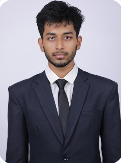

My Resume
Summary
My name is Waseem Wajid Khan and I am a learning web developer, currently pursuing my B.Tech degree in Computer Science and Engineering.

This resume contains all the projects I have worked on along with its specifications, implementations and results.
Education
Studied early years of schooling in Riyadh, Saudi Arabia from IIPSR.
Continued the rest of my school days in Sri Chaitanya in Hyderabad, India from 2018-2023.
Currently pursuing a B.Tech degree in CSE in Woxsen University, India as a 2nd year student.
Work Experience (satire)
Time Management Expert
- Perfected the art of "working" on multiple projects while scrolling social media.
- Mastered 5-minute breaks that last an hour, boosting "creative thinking" time.
- Successfully completed tasks just in time (if deadlines were flexible by 48 hours).
Senior Netflix Analyst
- Binge-watched entire seasons in record time while maintaining expert-level commentary.
- Successfully identified key narrative flaws in over 100 TV series and films.
- Enhanced relaxation productivity by developing optimized lounging positions.
Chief Meme Curator
- Curated and shared memes daily, contributing to the emotional well-being of colleagues.
- Implemented advanced "reaction analysis" to predict the most viral content.
- Collaborated with the GIF Design Department to create "high-impact" reaction responses.
Awards
- Golden Couch Potato Medal of November 2023
- Chief Overthinker of the Year 2022
- Overachiever in Underachieving Award
Contact me